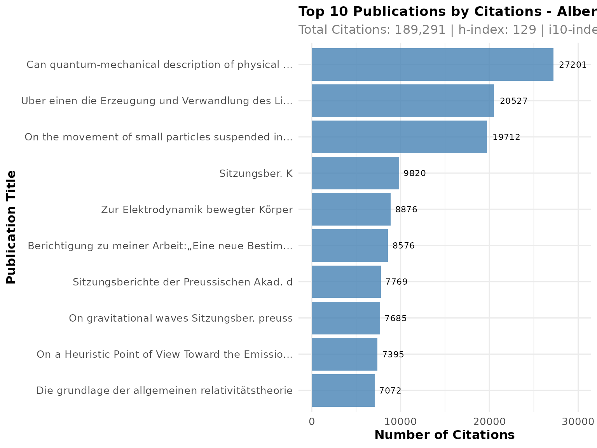
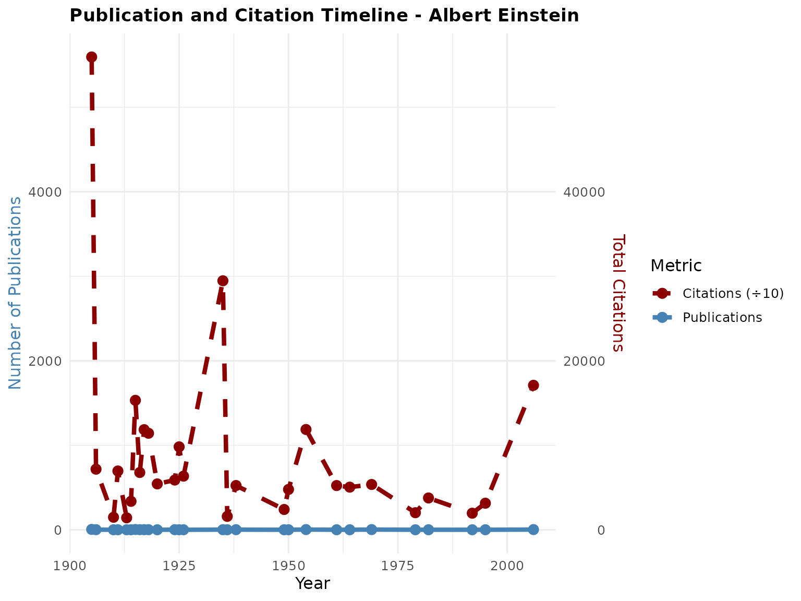
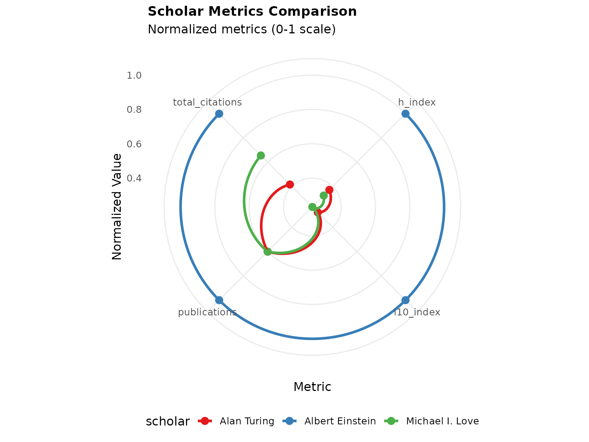
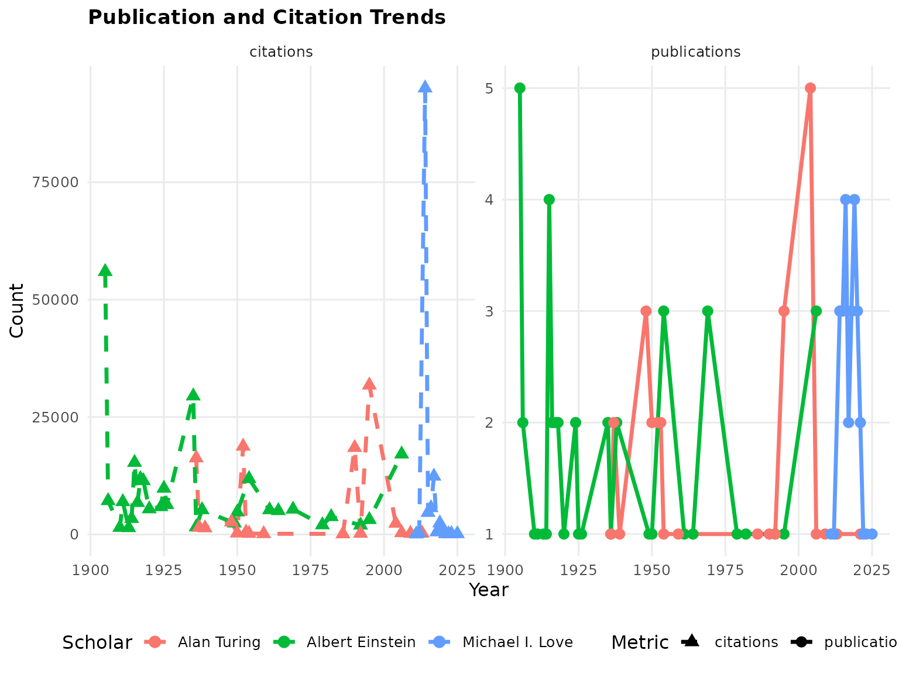
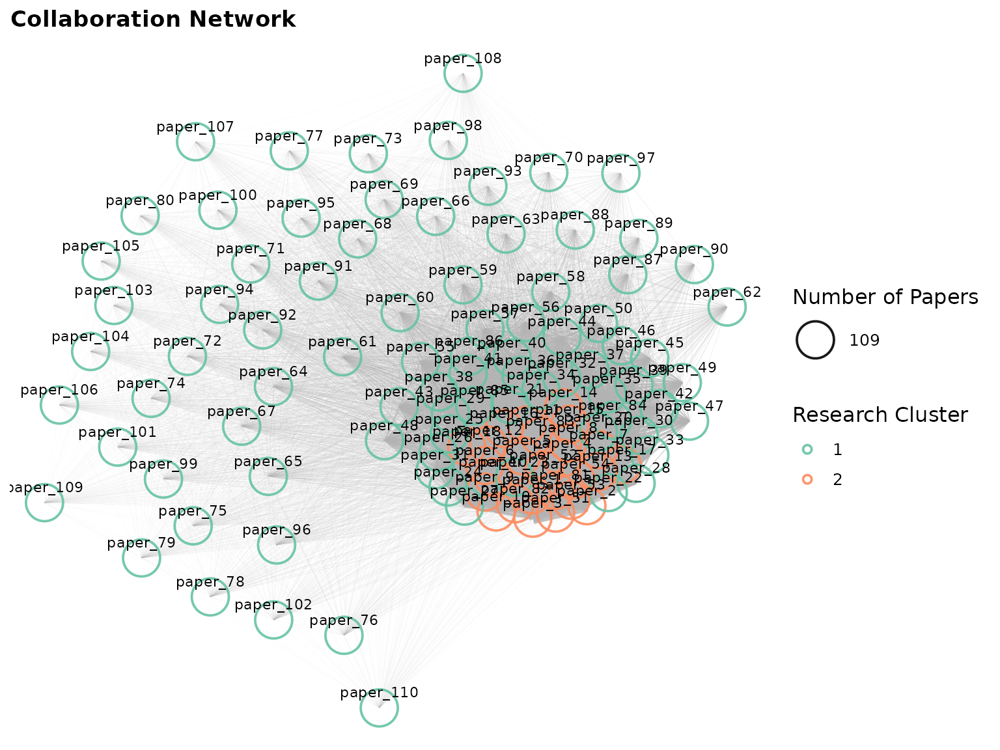

CiteAnalyzer
Citation Analysis from Google Scholar
Dany Mukesha
16 December 2025
Source:vignettes/CiteAnalyzer.Rmd
CiteAnalyzer.RmdAbstract
Existing tools for Google Scholar citation analysis face significant limitations including frequent blocking due to aggressive scraping, lack of reproducible workflows, and limited analytical capabilities beyond basic metrics. CiteAnalyzer addresses these challenges through a Bioconductor-compliant R package that implements ethical data extraction protocols with adaptive rate limiting, automatic retry mechanisms, and user-agent rotation to prevent service disruption. The package introduces a robust S4 class system for structured data storage and reproducible analysis workflows, enabling calculation of both standard metrics (h-index, i10-index, m-index) and advanced field-weighted impact scores. CiteAnalyzer uniquely integrates collaboration network analysis through co-citation network generation and community detection algorithms, providing insights into research communities and potential collaboration opportunities. The tool includes publication-quality visualization tools for temporal trend analysis, multi-scholar comparison, and interactive network exploration. Designed specifically for bioinformatics researchers and bibliometric analysts, CiteAnalyzer follows Bioconductor standards for documentation, testing, and parallel processing integration. CiteAnalyzer empowers researchers to conduct ethical, reproducible, and sophisticated citation analysis that reveals deeper insights into scientific impact and collaboration patterns than previously possible with existing tools.Introduction
CiteAnalyzer is designed for citation analysis from Google Scholar data. It addresses key common challenges face when analyzing citation data, including:
- Rate limiting and blocking prevention through built-in request throttling
- Comprehensive metrics calculation beyond basic h-index and i10-index
- Multi-scholar comparison with normalized ranking systems
- Collaboration network analysis to identify research communities
- Temporal trend analysis to track research impact over time
- Publication impact visualization with interactive plots
Unlike existing tools, CiteAnalyzer ensures reproducibility, robust error handling, and integration with biological research workflows.
Installation
To install CiteAnalyzer from Bioconductor:
Or install the development version from GitHub:
remotes::install_github("danymukesha/CiteAnalyzer")Basic Usage
Creating a Scholar Profile
The primary function for extracting Google Scholar data is
ExtractScholarData(). This function includes built-in rate
limiting to prevent Google Scholar from blocking requests.
library(CiteAnalyzer)
# Extract data for a scholar (replace with actual Google Scholar ID)
# For demonstration, we'll use a sample ID
scholar_data <- ExtractScholarData("qc6CJjYAAAAJ", max_publications = 50,
cache_dir = "temp/")
# View basic information
print(scholar_data@name)
#> [1] "Albert Einstein"
print(scholar_data@affiliation)
#> [1] "Institute of Advanced Studies, Princeton"
print(scholar_data@interests)
#> [1] "Physics"Calculating Metrics
CiteAnalyzer provides metric calculation beyond standard indices:
# Calculate all available metrics
metrics <- GetScholarMetrics(scholar_data)
# View results
print(metrics)
#> $h_index
#> [1] 50
#>
#> $i10_index
#> [1] 50
#>
#> $m_index
#> [1] 0.8935571
#>
#> $citations_per_paper
#> [1] 5197.02
# Calculate specific metrics
h_index <- calculate_h_index(scholar_data@publications$citedby)
i10_index <- calculate_i10_index(scholar_data@publications$citedby)
m_index <- calculate_m_index(
h_index,
min(scholar_data@publications$year, na.rm = TRUE)
)
cat(sprintf("h-index: %d\ni10-index: %d\nm-index: %.2f\n",
h_index, i10_index, m_index))
#> h-index: 50
#> i10-index: 50
#> m-index: 0.41Visualizing Citation Impact
The package provides several visualization functions to help interpret citation data:
# Plot top publications by citations
p1 <- PlotCitationImpact(scholar_data, plot_type = "summary")
print(p1)
# Plot publication and citation timeline
p2 <- PlotCitationImpact(scholar_data, plot_type = "timeline")
print(p2)
Advanced Analysis
Comparing Multiple Scholars
CiteAnalyzer excels at comparing multiple scholars using normalized metrics:
# Extract data for multiple scholars
scholar1 <- ExtractScholarData("qc6CJjYAAAAJ", max_publications = 30,
cache_dir = "temp")
scholar2 <- ExtractScholarData("VWCHlwkAAAAJ", max_publications = 30,
cache_dir = "temp")
scholar3 <- ExtractScholarData("vzXv764AAAAJ", max_publications = 30,
cache_dir = "temp")
# Compare scholars
comparison <- CompareScholars(list(scholar1, scholar2, scholar3))
# View comparison results
print(comparison)
#> scholar_id name
#> h_index qc6CJjYAAAAJ Albert Einstein
#> h_index1 VWCHlwkAAAAJ Alan Turing
#> h_index2 vzXv764AAAAJ Michael I. Love
#> affiliation
#> h_index Institute of Advanced Studies, Princeton
#> h_index1 Reader, University of Manchester
#> h_index2 Associate Professor, Genetics and Biostatistics, UNC-Chapel Hill
#> h_index i10_index citations_total publications_count h_index_rank
#> h_index 129 380 189291 50 1
#> h_index1 48 105 78841 30 2
#> h_index2 42 88 124174 30 3
#> i10_index_rank citations_total_rank publications_count_rank
#> h_index 1 1 1
#> h_index1 2 3 2
#> h_index2 3 2 2
#> composite_score overall_rank
#> h_index 1.00 1
#> h_index1 2.25 2
#> h_index2 2.50 3
# Create comparison visualization
p3 <- PlotCitationImpact(scholar1, plot_type = "comparison",
compare_with = list(scholar2, scholar3),
radar_coord = "polar")
print(p3)
Analyzing Citation Trends
Track how citation patterns evolve over time:
# Analyze trends for multiple scholars
trends <- AnalyzeCitationTrends(list(scholar1, scholar2, scholar3), time_period = "10y")
# Plot publication trends
p4 <- PlotPublicationTrends(list(scholar1, scholar2, scholar3), trend_type = "both")
print(p4)
Finding Collaborators
Identify potential research collaborators based on similarity metrics:
# Find potential collaborators for scholar1
collaborators <- FindCollaborators(scholar1, list(scholar2, scholar3), min_similarity = 0.2)
# View results
print(collaborators)
#> candidate_name candidate_id
#> 1 Alan Turing VWCHlwkAAAAJ
#> 2 Michael I. Love vzXv764AAAAJ
#> candidate_affiliation
#> 1 Reader, University of Manchester
#> 2 Associate Professor, Genetics and Biostatistics, UNC-Chapel Hill
#> interest_similarity h_index_similarity composite_similarity target_h_index
#> 1 0 0.800 0.240 129
#> 2 0 0.773 0.232 129
#> candidate_h_index
#> 1 48
#> 2 42Network Analysis
Visualize collaboration networks between researchers:
# Create citation network
network <- CreateCitationNetwork(list(scholar1, scholar2, scholar3), min_citations = 5)
# Plot collaboration network
if (igraph::gsize(network) > 0) {
p5 <- PlotCollaborationNetwork(network, layout_type = "fr")
print(p5)
}
Conclusion
CiteAnalyzer provides a toolkit for citation analysis from Google Scholar data. By addressing key challenges like rate limiting, reproducibility, and metric calculation, it enables the user to gain deeper insights into research impact and collaboration patterns.
The implement structured S4 classes, extensive documentation, and visualization capabilities make it suitable for both individual users and large-scale bibliometric studies.
Future versions will include integration with additional citation databases and more sophisticated network analysis algorithms.
Session Information
sessionInfo()
#> R version 4.5.2 (2025-10-31)
#> Platform: x86_64-pc-linux-gnu
#> Running under: Ubuntu 24.04.3 LTS
#>
#> Matrix products: default
#> BLAS: /usr/lib/x86_64-linux-gnu/openblas-pthread/libblas.so.3
#> LAPACK: /usr/lib/x86_64-linux-gnu/openblas-pthread/libopenblasp-r0.3.26.so; LAPACK version 3.12.0
#>
#> locale:
#> [1] LC_CTYPE=C.UTF-8 LC_NUMERIC=C LC_TIME=C.UTF-8
#> [4] LC_COLLATE=C.UTF-8 LC_MONETARY=C.UTF-8 LC_MESSAGES=C.UTF-8
#> [7] LC_PAPER=C.UTF-8 LC_NAME=C LC_ADDRESS=C
#> [10] LC_TELEPHONE=C LC_MEASUREMENT=C.UTF-8 LC_IDENTIFICATION=C
#>
#> time zone: UTC
#> tzcode source: system (glibc)
#>
#> attached base packages:
#> [1] stats graphics grDevices utils datasets methods base
#>
#> other attached packages:
#> [1] CiteAnalyzer_1.0.0 BiocStyle_2.38.0
#>
#> loaded via a namespace (and not attached):
#> [1] gtable_0.3.6 jsonlite_2.0.0 dplyr_1.1.4
#> [4] compiler_4.5.2 BiocManager_1.30.27 tidyselect_1.2.1
#> [7] xml2_1.5.1 tidyr_1.3.1 jquerylib_0.1.4
#> [10] systemfonts_1.3.1 scales_1.4.0 textshaping_1.0.4
#> [13] yaml_2.3.12 fastmap_1.2.0 ggplot2_4.0.1
#> [16] R6_2.6.1 labeling_0.4.3 generics_0.1.4
#> [19] igraph_2.2.1 knitr_1.50 BiocGenerics_0.56.0
#> [22] htmlwidgets_1.6.4 tibble_3.3.0 bookdown_0.46
#> [25] desc_1.4.3 lubridate_1.9.4 bslib_0.9.0
#> [28] pillar_1.11.1 RColorBrewer_1.1-3 rlang_1.1.6
#> [31] cachem_1.1.0 xfun_0.54 fs_1.6.6
#> [34] sass_0.4.10 S7_0.2.1 timechange_0.3.0
#> [37] cli_3.6.5 withr_3.0.2 pkgdown_2.2.0
#> [40] magrittr_2.0.4 digest_0.6.39 grid_4.5.2
#> [43] lifecycle_1.0.4 S4Vectors_0.48.0 vctrs_0.6.5
#> [46] evaluate_1.0.5 glue_1.8.0 farver_2.1.2
#> [49] ragg_1.5.0 stats4_4.5.2 purrr_1.2.0
#> [52] rmarkdown_2.30 tools_4.5.2 pkgconfig_2.0.3
#> [55] htmltools_0.5.9